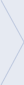

Regístrate y participa
- 
-
- 1
- Pulsa en buscar y
acepta geolocalizarte
-
- 2
- Escoge oficina
-
- 3
- Elige cómo entrar
-
- 4
- Acepta la app
(sólo facebook)
Todo comienza por el mapa
También puedes navegar por el mapa. Si haces doble click, irás aproximándote al lugar donde quieras buscar tu oficina.
Cuando seleccionas una oficina y te registras en ella, entras a formar parte de un grupo de acción, junto con las demás personas que la han escogido.
Cada grupo se comunica a través de su foro. Sólo puedes pertenecer a un foro a la vez. De esta manera todas sabemos cuántas somos y podemos distribuir mejor las tareas.
Los grupos pueden ver cómo lo están haciendo los demás y aprender de ellos, pero sólo participan en el foro de su sucursal.
Por supuesto el teléfono y los bares siguen existiendo ;-)
Si entras con tu usuario de Facebook es más cómodo para tí y puedes interactuar también en ese espacio. Además le das difusión a “Toque a Bankia”.
La noticia de que te has apuntado a la acción aparecerá en tu muro y en el de todas las demás personas de tu grupo.
Si te registras con el formulario todo es igual salvo que no has conectado tu Facebook a la acción y tu espacio privilegiado será el foro.
En ambos casos es muy importante que el grupo se organice para definir formas de acción y disponibilidad horaria para la jornada.